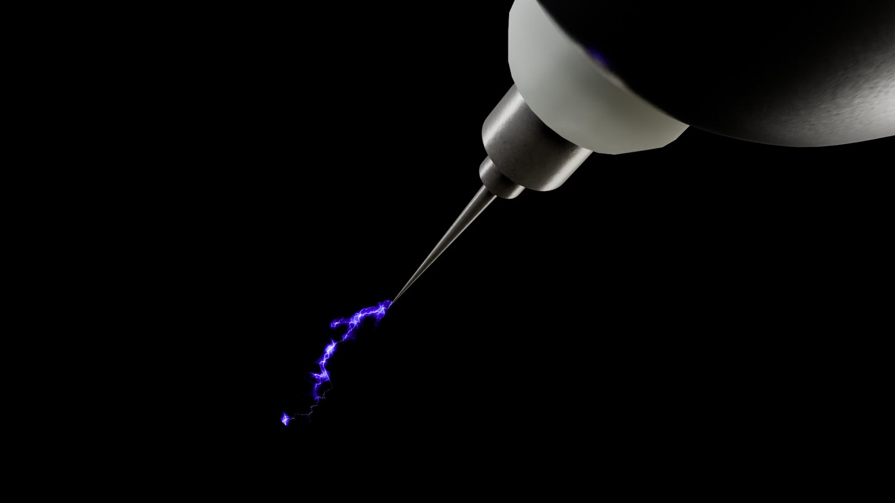

Cấu hình máy tính học Blender 3D: mua gì, và khi nào chưa cần nâng cấp

Câu hỏi này thường đến kèm một mong đợi ngầm: rằng máy mạnh hơn sẽ làm hình đẹp hơn. Nói thẳng — không. Máy mạnh làm bạn chờ ít hơn. Đẹp hay không nằm ở chỗ khác.
Nhưng chờ ít hơn cũng đáng tiền, nên đây là hướng dẫn thật theo từng giai đoạn.
Giai đoạn 1 — Mới học: đừng mua gì cả
Blender chạy được trên máy khá phổ thông. Nếu máy bạn có card rời bất kỳ, 16GB RAM và SSD, bạn đủ đi hết giai đoạn học modeling, vật liệu và ánh sáng cơ bản — tức là khoảng nửa năm đầu.
Ở giai đoạn này cảnh của bạn nhẹ, render nháp vài phút là xong. Nâng cấp máy lúc này giống mua giày chạy marathon khi mới tập đi bộ.
Người mới hay đổ cho máy khi hình chưa đẹp. Chín trên mười lần, đổi máy xong hình vẫn vậy — chỉ là ra kết quả nhanh hơn.
Giai đoạn 2 — Bắt đầu render nặng: ưu tiên GPU và RAM
Khi cảnh có nhiều vật thể, vật liệu phức tạp và bạn render Cycles, thứ tự ưu tiên rất rõ:
GPU — quan trọng nhất
Cycles render bằng GPU nhanh hơn CPU nhiều lần. Điều cần chú ý không chỉ là tốc độ mà là dung lượng VRAM: nếu cảnh không nhét vừa VRAM, render sẽ đổ ngược về RAM hệ thống và chậm đi thảm hại, hoặc lỗi hẳn. Với công việc sản phẩm, 12GB VRAM là mức dễ thở, 24GB thì thoải mái.
RAM — thứ hai
32GB là mức làm việc được. 64GB dành cho cảnh nặng, nhiều texture độ phân giải cao, hoặc khi bạn vừa mở Blender vừa mở phần mềm dựng phim. Thiếu RAM biểu hiện rất khó chịu: máy không báo lỗi, chỉ đơ dần.
CPU — thứ ba
Ảnh hưởng tới thao tác trong viewport, mô phỏng vật lý, và khâu dựng phim. Không cần đắt nhất; một CPU tầm trung đời mới là đủ.
SSD — bắt buộc, nhưng rẻ
File Blender dự án thương mại dễ vượt 200MB, có khi vài trăm. Mỗi lần lưu và mở trên ổ cứng cơ là một lần bạn mất kiên nhẫn. NVMe rẻ hơn nhiều so với thời gian nó tiết kiệm.
Bảng tham khảo theo giai đoạn
| Thành phần | Mới học (0–6 tháng) | Làm dự án thật |
|---|---|---|
| GPU | Card rời bất kỳ, ≥6GB VRAM | ≥12GB VRAM, lý tưởng 24GB |
| RAM | 16GB | 32–64GB |
| CPU | Tầm trung đời gần | Nhiều nhân, đời mới |
| Ổ cứng | SSD 512GB | NVMe 1–2TB |
| Màn hình | Cái đang có | Màu chuẩn, hiệu chuẩn được |
Thứ ít người nhắc: màn hình
Nếu bạn làm hình ảnh thương mại, màn hình sai màu là vấn đề nghiêm trọng hơn card yếu. Bạn chỉnh ánh sáng và màu theo cái mình thấy — màn ám xanh hoặc quá sáng nghĩa là mọi quyết định màu của bạn đều lệch, và khách sẽ thấy khác hẳn.
Không cần màn đắt tiền. Cần một màn có thể hiệu chuẩn và một lần hiệu chuẩn tử tế.
Máy tính xách tay hay để bàn?
Cùng tầm tiền, máy để bàn mạnh hơn đáng kể và tản nhiệt tốt hơn — laptop render lâu sẽ giảm xung để hạ nhiệt, nghĩa là con số trên giấy không phải con số bạn nhận được. Chọn laptop khi bạn thật sự cần di chuyển, không phải vì "cho tiện".
Ba cách tiết kiệm không cần mua gì
- Render nháp ở độ phân giải thấp. Kiểm tra ánh sáng và bố cục ở 50% là đủ; chỉ render đủ kích thước ở bản cuối.
- Dùng EEVEE để căn chỉnh. Dựng ánh sáng ở EEVEE cho nhanh, chuyển Cycles ở bước cuối.
- Giảm texture khi làm việc. Texture 4K trong lúc dựng là lãng phí VRAM; chỉ bật lên ở bản render cuối.
Tóm lại: bắt đầu bằng máy đang có. Khi nào bạn thấy mình chờ nhiều hơn làm, lúc đó nâng cấp — và nâng GPU trước. Còn nếu vấn đề là hình chưa đẹp thì máy mới không giải quyết được; cái cần xem lại là ánh sáng.
Muốn được sửa bài trực tiếp?
Coaching 1:1 online, đồng hành trọn một năm. Để lại thông tin, tôi xem qua và tư vấn bạn nên bắt đầu từ đâu.
Đăng ký tư vấn